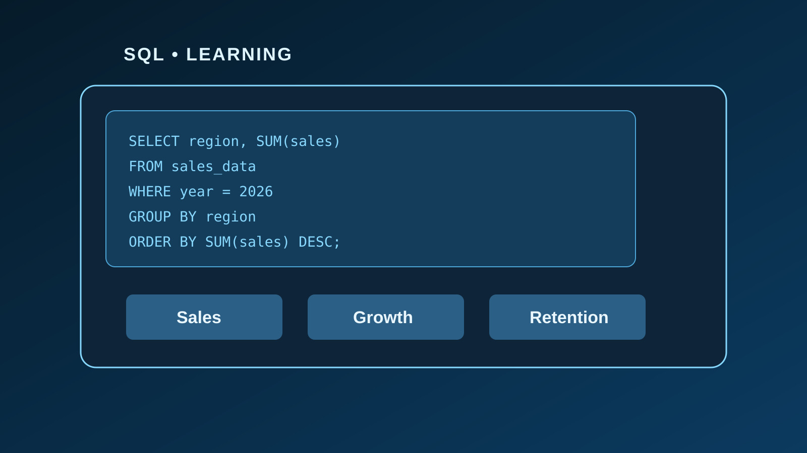
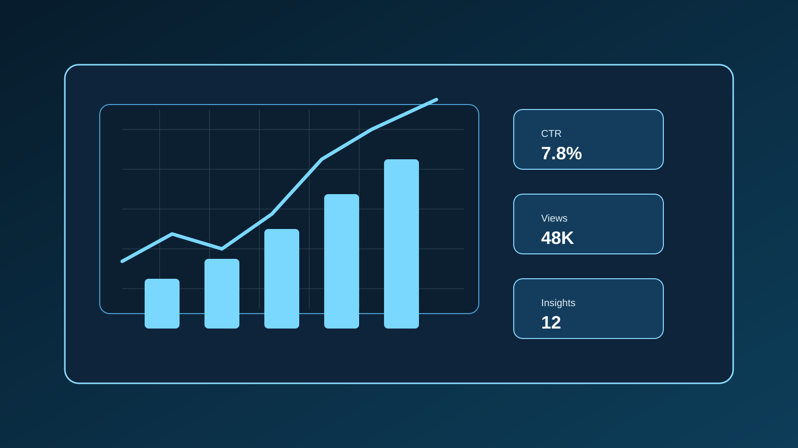

Mi experiencia aprendiendo SQL
Cómo estoy construyendo una base sólida para consultar información, entender relaciones y trabajar con datos con mayor claridad.
Notas sobre datos, tecnología y mi transición profesional.

Cómo estoy construyendo una base sólida para consultar información, entender relaciones y trabajar con datos con mayor claridad.

Cuando una gráfica comunica mejor que una tabla, la información se vuelve más útil, más clara y más fácil de compartir.